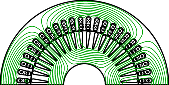
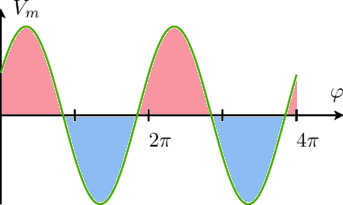
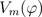
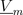
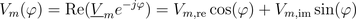
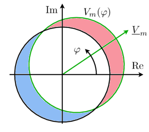

ConceptFundamental wave concept |
|
Information
This information is part of the Modelica Standard Library maintained by the Modelica Association.
Overview of the concept of fundamental waves
The exact magnetic field in the air gap of an electric machine is usually determined by an electro magnetic finite element analysis. The waveform of the magnetic field, e.g., the magnetic potential difference  , consists of a spatial fundamental wave - with respect to an equivalent two pole machine - and additional harmonic waves of different order. The fundamental wave is however dominant in the air gap of an electric machine.
, consists of a spatial fundamental wave - with respect to an equivalent two pole machine - and additional harmonic waves of different order. The fundamental wave is however dominant in the air gap of an electric machine.
|  |
In the fundamental wave theory only a pure sinusoidal distribution of magnetic quantities is assumed. It is thus assumed that all other harmonic wave effects are not taken into account.
|  |
The waveforms of the magnetic field quantities, e.g., the magnetic potential difference , can be represented by complex phasor, e.g.,  according to:

It is important to note that the magnetic potential used in this library always refers to an equivalent two pole machine.
|  |
The potential and flow quantities of this library are the complex magnetic potential difference and the complex magnetic flux as defined in the basic magnetic port. Due to the sinusoidal distribution of magnetic potential and flux, such a complex phasor representation can be used. This way, the FundamentalWave library can be seen as a spatial extension of the FluxTubes library.
The specific arrangement of windings in electric machines with pole pairs give rise to sinusoidal dominant magnetic potential wave. The spatial period of this wave is determined by one pole pair [Mueller70, Spaeth73].
The main components of an electric machine model based on the FundamentalWave library are multi phase and single phase windings, air gap as well as symmetric or salient cage models. The electric machine models provided in this library are based on symmetrical windings in the stator and equivalent two or three phase windings in squirrel cage rotors. Slip ring induction machines may have different phase numbers in the stator and rotor.
Assumptions
The machine models of the FundamentalWave library are currently based on the following assumptions
- The number of stator phases is greater or equal to three [Eckhardt82]
- The phase windings are assumed to be symmetrical; an extension to this approach can be considered
- Only fundamental wave effects are taken into account
- The magnetic potential difference refers to an equivalent two pole machine
- There are no restrictions on the waveforms of voltages and currents
- All resistances and inductances are modeled as constant quantities; saturation effects, cross coupling effects [Li07], temperature dependency of resistances and deep bar effects could be considered in an extension to this library
- Hysteresis losses are currently not considered [Haumer09]
- The losses dissipated in the electric machine models are
- ohmic heat losses,
- eddy current losses in the stator core,
- stray load losses,
- friction losses.
Note
The term fundamental wave refers to spatial waves of the electro magnetic quantities. This library has no limitations with respect to the waveforms of the time domain signals of any voltages, currents, etc.